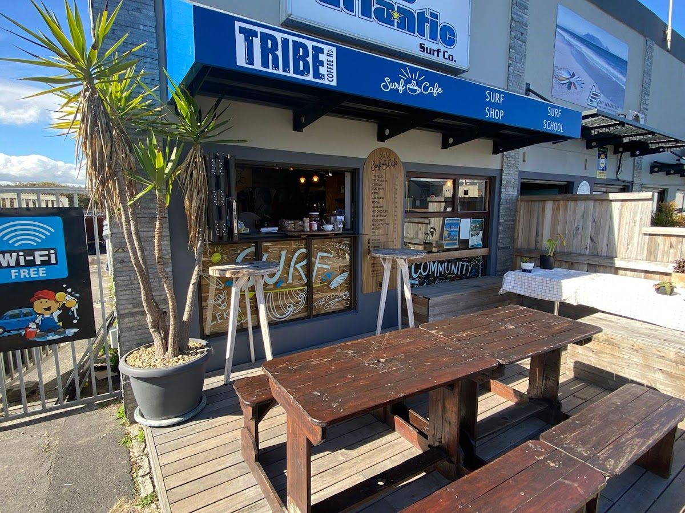
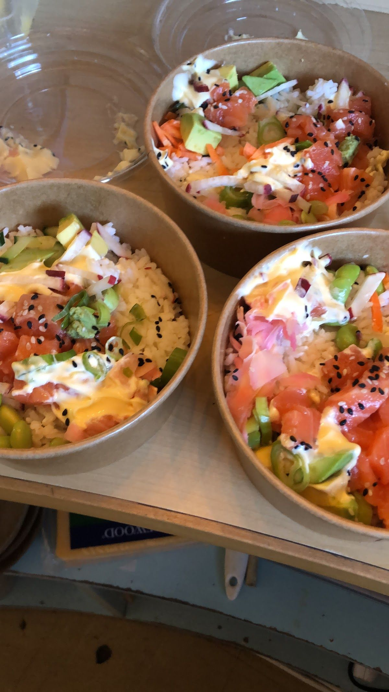
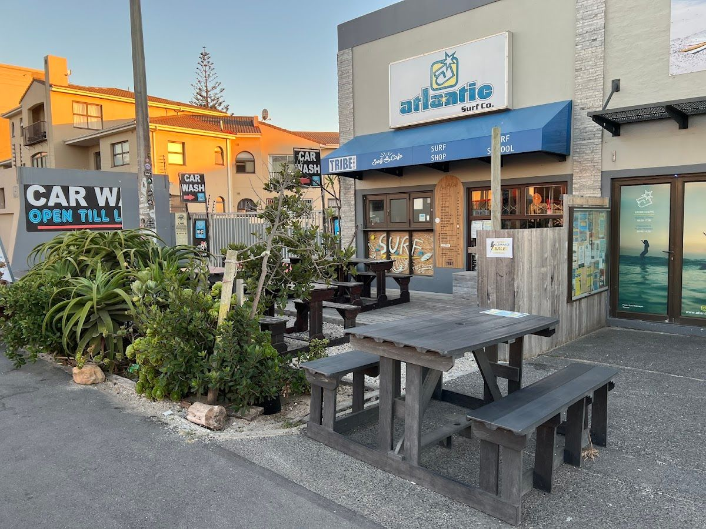
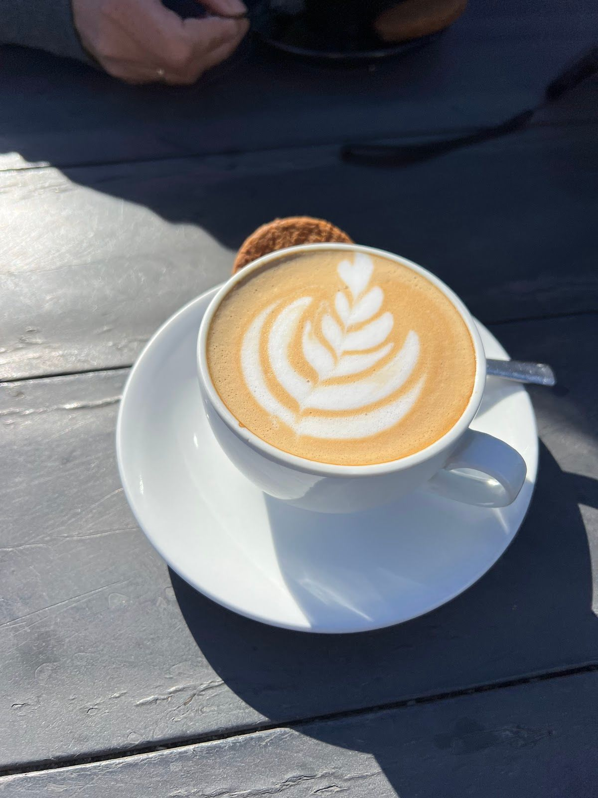

I founded The Surf Cafe to create a warm, inviting space for coffee lovers and food enthusiasts alike in the heart of Cape Town. Our mission is to serve perfectly crafted beverages and delicious snacks that highlight the vibrant flavors of our region.
Starting with a passion for exceptional coffee and a love for the ocean, The Surf Cafe was born. Our cafe is more than just a place to grab a drink; it's a community hub where locals and visitors come together to enjoy the simple pleasures of life.
At The Surf Cafe, we value quality, sustainability, and connection. We carefully source our ingredients to ensure every cup and plate reflects our commitment to excellence and our dedication to the local community.
Explore our selection of expertly crafted beverages and snacks, perfect for any time of day.
Our coffee beans are sourced from the finest plantations, roasted to perfection, and brewed with precision to deliver a rich, aromatic experience.
Indulge in our selection of freshly baked pastries, offering a delightful blend of textures and flavors that complement our coffee perfectly.
Our smoothies are crafted from fresh, local produce, offering a refreshing and healthy option to start your day or recharge after a surf.
Here is what our clients say about us.
"This a cool little corner cafe. We only tried the smoothies, they were very filling and delicious. The service was quick enough. There are tables and seats outside, pet friendly. I don’t eat gluten free, but I tried their vegan & gluten-free brownie and it is AMAZING! I highly recommend it."— Suzie G, ⭐⭐⭐⭐
"Nice little cafe to sit and have something. We had this amazing banana bread that they toast warm and it was delicious! We also had a smoothie and iced coffee, all great! Nice little cozy place to relax a bit."— Cassandra Remini, ⭐⭐⭐⭐⭐
"We enjoyed a good and tasty breakfast. The Breakfast wrap and a Smashed Avo. Combined with a Cortado, Americano (small) and a Flat white. Really good tastes and nicely presented. The location was a bit less (busy) due to the road. But that doesn’t take away the good service."— Martijn van der Laak, ⭐⭐⭐⭐⭐
"Cosy cafe with fresh and healthy food and own surf shop. Outdoor seating available - perfect for a short stop after walking the dogs at the beach"— Kiki Deer, ⭐⭐⭐⭐⭐
"Good vibes, good coffee, good atmosphere. The coffee paired with the burger from Ground Culture is chef’s kiss 🤌🏼"— K, ⭐⭐⭐⭐⭐




We'd love to hear from you — reach out to us anytime.